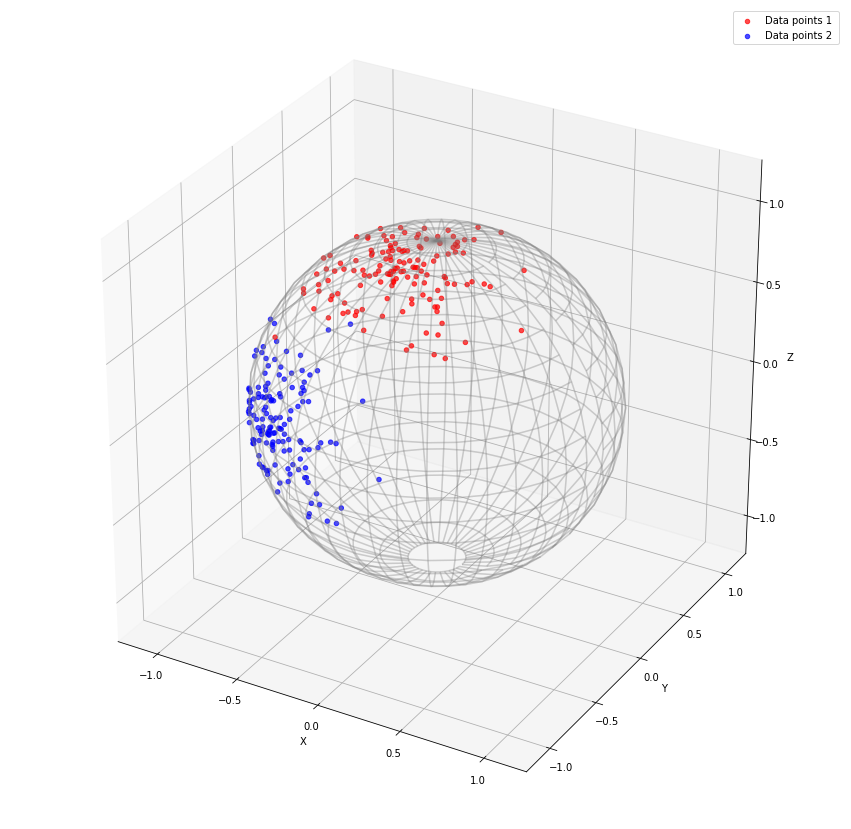

Notebook source code:
notebooks/07_practical_methods__riemannian_kmeans.ipynb
Run it yourself on binder

K-Means clustering on a Riemannian Manifold#
Lead authors: Thomas Gerald and Hadi Zaatiti.
In this notebook, we demonstrate how run a K-mean clustering algorithm on a Riemannian Manifold. Generate data on a sphere from a Von Mises Fisher distribution and apply a rotation sampled randomly from SO3.
Setup#
In [19]:
import os
import subprocess
geomstats_gitroot_path = subprocess.check_output(
["git", "rev-parse", "--show-toplevel"], universal_newlines=True
)
os.chdir(geomstats_gitroot_path[:-1])
print("Working directory: ", os.getcwd())
Working directory: /Users/nicolasguigui/gits/geomstats
In [20]:
import matplotlib.pyplot as plt
import numpy as np
import geomstats.backend as gs
import geomstats.visualization as visualization
from geomstats.geometry.hypersphere import Hypersphere
from geomstats.geometry.special_orthogonal import SpecialOrthogonal
np.random.seed(1)
gs.random.seed(1000)
Data init: Generate clusters randomly on the sphere#
In [21]:
sphere = Hypersphere(dim=2)
cluster = sphere.random_von_mises_fisher(kappa=20, n_samples=140)
SO3 = SpecialOrthogonal(3)
rotation1 = SO3.random_uniform()
rotation2 = SO3.random_uniform()
cluster_1 = cluster @ rotation1
cluster_2 = cluster @ rotation2
fig = plt.figure(figsize=(15, 15))
ax = visualization.plot(
cluster_1, space="S2", color="red", alpha=0.7, label="Data points 1 "
)
ax = visualization.plot(
cluster_2, space="S2", ax=ax, color="blue", alpha=0.7, label="Data points 2"
)
ax.auto_scale_xyz([-1, 1], [-1, 1], [-1, 1])
ax.legend();

Operate Riemannian K-Means clustering#
In [22]:
from geomstats.learning.kmeans import RiemannianKMeans
from geomstats.geometry.hypersphere import Hypersphere
manifold = Hypersphere(dim=2)
metric = manifold.metric
data = gs.concatenate((cluster_1, cluster_2), axis=0)
kmeans = RiemannianKMeans(metric, 2, tol=1e-3, init_step_size=1.0)
kmeans.fit(data)
labels = kmeans.predict(data)
centroids = kmeans.centroids
Plot the results:
In [5]:
fig = plt.figure(figsize=(15, 15))
colors = ["red", "blue"]
ax = visualization.plot(data, space="S2", marker=".", color="grey")
for i in range(2):
ax = visualization.plot(
points=data[labels == i], ax=ax, space="S2", marker=".", color=colors[i]
)
for i, c in enumerate(centroids):
ax = visualization.plot(c, ax=ax, space="S2", marker="*", s=2000, color=colors[i])
ax.set_title("Kmeans on Hypersphere Manifold")
ax.auto_scale_xyz([-1, 1], [-1, 1], [-1, 1])

In [23]: